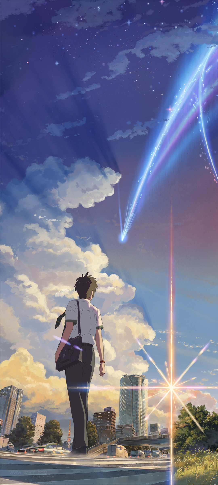
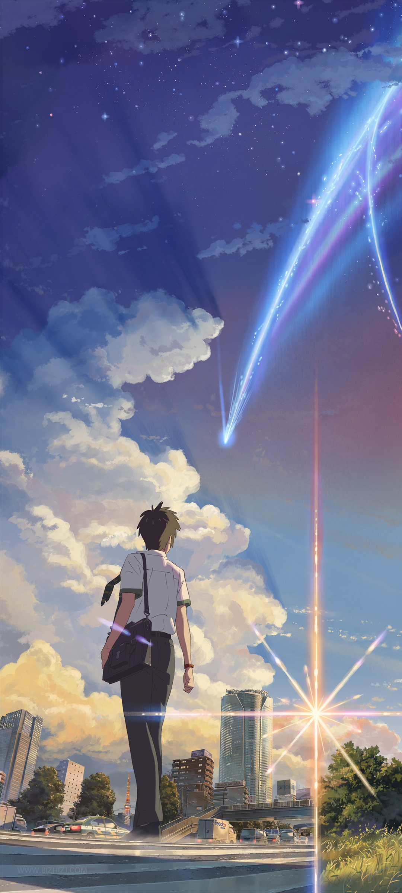

🚀 科幻冒险类动漫
《进击的巨人》（進撃の巨人）
谏山创创作的经典科幻冒险番，讲述了人类为躲避巨人追杀躲在围墙内，艾伦等主角为追求自由突破围墙、揭开世界真相的故事。作品融合了科幻、战争、悬疑等元素，剧情反转震撼，世界观宏大，是近几年的现象级动漫。
《你的名字。》（君の名は。）
新海诚执导的动画电影，以“时空交错”为核心，讲述了乡下少女三叶和东京少年泷在梦中互换身体，彼此寻找、拯救对方的故事。画面唯美，剧情融合科幻与爱情，既有冒险的张力，又有细腻的情感表达，是科幻动画的代表作。
谏山创创作的经典科幻冒险番，讲述了人类为躲避巨人追杀躲在围墙内，艾伦等主角为追求自由突破围墙、揭开世界真相的故事。作品融合了科幻、战争、悬疑等元素，剧情反转震撼，世界观宏大，是近几年的现象级动漫。
新海诚执导的动画电影，以“时空交错”为核心，讲述了乡下少女三叶和东京少年泷在梦中互换身体，彼此寻找、拯救对方的故事。画面唯美，剧情融合科幻与爱情，既有冒险的张力，又有细腻的情感表达，是科幻动画的代表作。